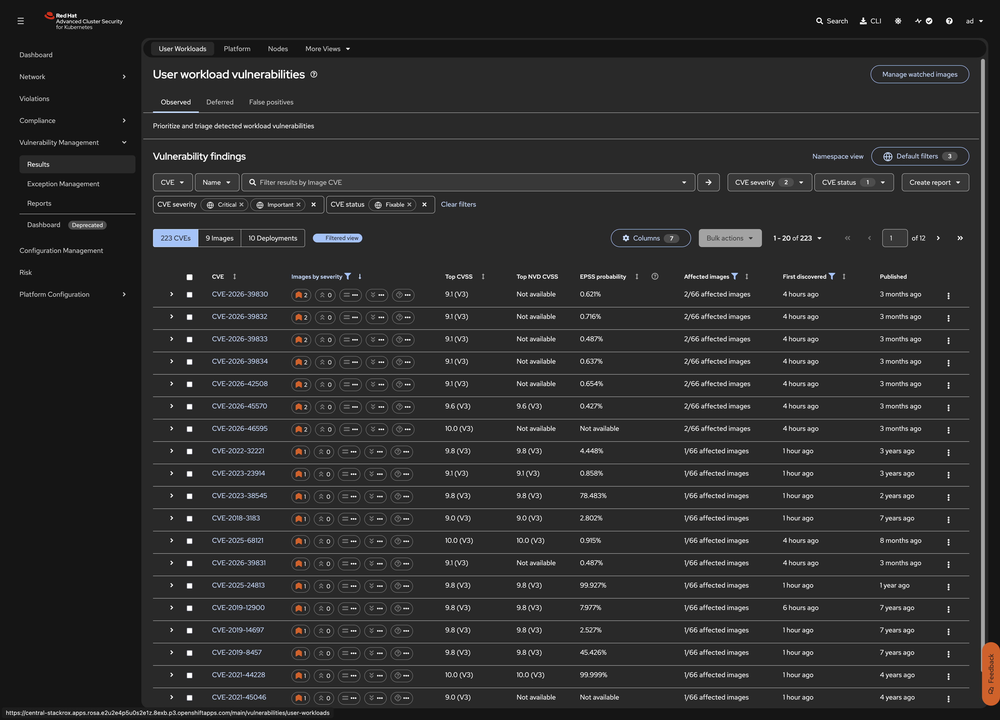

RHACS: Security Lifecycle Workshop
This step covers the RHACS vulnerability management workflow from finding CVEs to reporting on them. You look at the CVEs in the acs-workshop images from several angles: the RHACS portal, the roxctl CLI, and the OpenShift web console. You separate fixable from unfixable CVEs, evaluate severity against Red Hat VEX data, generate an SBOM, handle a CVE you cannot fix right away with a formal exception (deferral), and schedule a vulnerability report for the application team.
Prerequisites
-
Step 4 completed. All three
acs-workshoppods are running and have been scanned. -
ROX_API_TOKENandACS_CENTRAL_ROUTEexported (see Export Workshop Variables) -
roxctl4.11+ andjqinstalled
| This step creates no YAML resources. Vulnerability data is read-only analysis, and exceptions and report configurations are workflow objects stored in Central. |
Steps to apply
1. Explore workload CVEs in the RHACS portal
What: Walk through the vulnerability management views in the ACS console to understand how CVEs are organized.
Why: The portal provides three views of the same data - by CVE, by image, and by deployment. Understanding all three helps you triage efficiently rather than getting lost in raw CVE lists.
In the ACS console, navigate to Vulnerability Management > Results > User Workloads and add the filter Namespace: acs-workshop. The default view shows Critical and Important fixable CVEs across all images.

Explore the three views:
-
CVEs: every CVE with its severity, CVSS score, number of affected images, and first-discovered date
-
Images: the three images ranked by CVE count. The UBI 8.4 image has the most CVEs, mostly Moderate and Low. The NGINX image has fewer, but some are Critical.
-
Deployments: the same data grouped by workload
Add the filters CVE status: Fixable and Severity: Critical, Important. This short list is what the application team should look at first.
Search for CVE-2021-44228 and open it. Check:
-
the affected component (
log4j-core 2.14.1) and the Fixed by version -
the affected image and deployment (
payments-api)
Open the image docker.io/library/nginx:1.22.0-alpine, then open the Image details / layers view:
-
see which Dockerfile line introduced each vulnerable component
-
check the detected base image: Alpine 3.16.2, with years of security updates never applied. Base image detection tells you whether the fix is to rebase the image or to update a package in the application layer.
Open the Platform tab (OpenShift and Kubernetes component CVEs) and the Nodes tab (RHCOS node CVEs). These belong to the cluster administrators, not to the application team, and are fixed through OpenShift updates.
Verify: You can filter to fixable Critical/Important CVEs in the acs-workshop namespace
The filtered view should show CVEs from all three images. CVE-2021-44228 should appear under payments-api. The NGINX image should show multiple fixable Important/Critical CVEs from its Alpine base.
2. Scan and inspect images from the CLI
What: Use roxctl to scan images, list CVEs by severity, and generate an SPDX SBOM.
Why: The CLI provides the same data as the portal but in a form that can be scripted, piped into other tools, or run in CI/CD pipelines. This is the foundation for the shift-left CI gate in Step 9.
Scan an image and list only the critical and important CVEs:
roxctl -e "https://${ACS_CENTRAL_ROUTE}:443" --insecure-skip-tls-verify \
image scan --image docker.io/library/nginx:1.22.0-alpine \
--severity CRITICAL,IMPORTANT --output table | head -30Get a summary of the severity counts for all three images:
for img in docker.io/library/nginx:1.22.0-alpine \
ghcr.io/christophetd/log4shell-vulnerable-app:latest \
registry.access.redhat.com/ubi8/ubi:8.4; do
echo "== $img"
roxctl -e "https://${ACS_CENTRAL_ROUTE}:443" --insecure-skip-tls-verify image scan --image "$img" --output json | jq '.result.summary'
done| A clean scan is not the same as a safe image. Scanner V4 finds OS-level CVEs only for supported distributions. For end-of-life base images, the scanner has no vulnerability data and the result will show almost no CVEs. In the portal, such images carry a warning such as "CVE DATA MAY BE INACCURATE" or "Stale OS CVE data". Treat end-of-life base images as a finding in their own right, not as a clean result. |
Generate an SPDX SBOM for the Log4Shell image and look up the log4j component in it:
roxctl -e "https://${ACS_CENTRAL_ROUTE}:443" --insecure-skip-tls-verify \
image sbom --image ghcr.io/christophetd/log4shell-vulnerable-app:latest > payments-api.spdx.json
jq -r '.packages[] | select(.name | test("log4j")) | "\(.name) \(.versionInfo)"' payments-api.spdx.json| ACS generates SBOMs in SPDX format. If your tooling expects CycloneDX (for example, Red Hat Trusted Profile Analyzer / TPA), you will need a conversion step. As of this writing, ACS does not generate CycloneDX natively. |
Verify: SBOM lists log4j components
log4j-core 2.14.1
log4j-api 2.14.13. Evaluate CVEs against Red Hat VEX data
What: Compare how ACS reports CVE severity on Red Hat images versus the raw NVD/CVSS score.
Why: The National Vulnerability Database (NVD) assigns CVSS scores based on the upstream vulnerability. Red Hat’s security team evaluates each CVE against RHEL-based packages and often assigns a different severity based on backported patches, compile-time mitigations, or configuration defaults that reduce the actual impact. ACS uses Red Hat’s assessment for images from registry.access.redhat.com and registry.redhat.io, which reduces false positives compared to scanners that rely only on NVD.
In the ACS console, navigate to Vulnerability Management > Results > User Workloads. Filter by namespace acs-workshop. Click on any CVE from the UBI 8.4 image (node-agent) to see its detail page.
On the CVE detail page, note the CVSS score shown by ACS. Then open the Red Hat Security page for the same CVE to compare:
# Pick an Important+Fixable CVE from the node-agent (UBI 8.4) image
NODE_AGENT_ID=$(curl -sk -H "Authorization: Bearer ${ROX_API_TOKEN}" \
"https://${ACS_CENTRAL_ROUTE}/v1/deployments?query=Namespace:acs-workshop" | \
jq -r '.deployments[] | select(.name=="node-agent") | .id')
IMAGE_SHA=$(curl -sk -H "Authorization: Bearer ${ROX_API_TOKEN}" \
"https://${ACS_CENTRAL_ROUTE}/v1/deployments/${NODE_AGENT_ID}" | \
jq -r '.containers[0].image.id')
CVE_SAMPLE=$(curl -sk -H "Authorization: Bearer ${ROX_API_TOKEN}" \
"https://${ACS_CENTRAL_ROUTE}/v1/images/${IMAGE_SHA}" | \
jq -r '[.scan.components[].vulns[]? | select(.severity == "IMPORTANT_VULNERABILITY_SEVERITY" and .fixedBy != "")] | .[0].cve')
echo "CVE: ${CVE_SAMPLE}"
echo "ACS detail: https://${ACS_CENTRAL_ROUTE}/main/vulnerabilities/workload-cves/cves/${CVE_SAMPLE}"
echo "Red Hat page: https://access.redhat.com/security/cve/${CVE_SAMPLE}"Open both links and compare:
-
ACS severity vs NVD CVSS base score
-
Whether Red Hat has marked the CVE as "not affected" or assigned a lower severity for RHEL
-
Whether a fix is available in a newer RHEL/UBI package version
| When the ACS severity is lower than the NVD score, it means Red Hat’s analysis determined the vulnerability has reduced impact on RHEL-based images - for example, because a vulnerable code path is not compiled in, or a default configuration mitigates the issue. |
Verify: You can see the difference between ACS and NVD severity
curl -sk -H "Authorization: Bearer ${ROX_API_TOKEN}" \
"https://${ACS_CENTRAL_ROUTE}/v1/images/${IMAGE_SHA}" | \
jq '[.scan.components[].vulns[]? | select(.severity == "IMPORTANT_VULNERABILITY_SEVERITY" and .fixedBy != "")] | .[:3] | .[] | {cve: .cve, severity: .severity, cvss: .cvss, fixedBy: .fixedBy}'Compare these CVSS scores with the NVD page for the same CVE. Red Hat-sourced scores may differ.
4. Red Hat Security Data API
What: Understand what security data Red Hat publishes and how ACS consumes it.
Why: Red Hat publishes machine-readable security data - including VEX advisories, CVRF/CSAF documents, and OVAL feeds - that ACS Scanner V4 consumes to provide accurate severity assessments. Understanding the data flow helps you trust the scan results and explains why ACS severity differs from raw NVD scores. This is also a requirement under the Cyber Resilience Act (CRA).
Red Hat security data is available at:
-
Red Hat Product Security Center - CVE lookup, severity ratings, and errata
-
Red Hat Security Data - machine-readable feeds (OVAL, CVRF, CSAF, VEX)
-
CSAF VEX advisories - per-advisory VEX documents in CSAF format
How the data flows into ACS:
-
Red Hat publishes security advisories (RHSA, RHBA, RHEA) with per-package severity ratings
-
Scanner V4 downloads and indexes the vulnerability definitions from Red Hat feeds
-
When an image is scanned, Scanner V4 matches components against the indexed data
-
The severity shown in ACS reflects Red Hat’s assessment, not the raw NVD CVSS score
| Future ACS releases will allow users to select specific input sources for CVE verification, such as OSV or Red Hat VEX, giving more control over which severity data to trust. |
5. Handle a CVE you cannot fix right away: request an exception
What: Use ACS exception workflows to defer a CVE and mark another as a false positive.
Why: Not every CVE can or should be fixed immediately. payments-api has Log4Shell but no patched build exists. Rather than ignoring the CVE, record a time-limited deferral that states which compensating control you will apply (Step 8 blocks egress from the pod, which cuts off the JNDI/LDAP callback the exploit needs).
Defer a CVE
In the ACS console, navigate to Vulnerability Management > Results > User Workloads, search CVE-2021-44228, and from the row’s kebab menu (⋮) choose Defer CVE.
Fill in:
-
Scope: this image (
ghcr.io/christophetd/log4shell-vulnerable-app:latest), not global -
Expiry: 30 days
-
Rationale:
No patched build from vendor. Compensating control: egress deny NetworkPolicy (08-remediation). Rebuild with log4j >= 2.17.1 tracked in TICKET-123.
Click Submit request and copy the approval link.
Exception requests are created with PENDING status. The requester cannot self-approve their own exceptions. An administrator or a different user with the VulnerabilityManagementApprovals permission must approve them.
|
Go to Vulnerability Management > Exception Management > Pending requests. Open the request, add a comment, and click Approve.
Back in User Workloads, the CVE is no longer under Observed. It is listed on the Deferred tab with its expiry date. When the deferral expires, it goes back to Observed on its own.
| Use Mark as false positive instead of Defer when the vulnerable code cannot be reached in your environment (for example, a component that is never loaded). Allowed deferral periods are set in Platform Configuration > Exception Configuration. |
Cancel a deferral early
If engineering delivers a fix before the deferral expires, you can cancel the deferral and bring the CVE back to the Observed tab so the team can verify the fix.
Go to Vulnerability Management > Exception Management > Approved deferrals. Open the CVE-2021-44228 request and click Cancel request. The CVE goes back to Observed. Only the user who created the request can cancel it.
Verify: Exception is registered
curl -sk -H "Authorization: Bearer ${ROX_API_TOKEN}" \
"https://${ACS_CENTRAL_ROUTE}/v2/vulnerability-exceptions/requests?query=" | \
jq '.requests[] | {status: .status, cves: .cves, type: .type}'6. Schedule a vulnerability report
What: Create a scheduled vulnerability report filtered to the workshop namespace.
Why: Automated reports keep stakeholders informed without requiring them to log in to the ACS portal. The 4.11 improvements include exact delivery times, workflow filters, and a column with the current component version.
In the ACS console, go to Vulnerability Management > Reports and click Create report:
-
Name:
acs-workshop - fixable critical/important -
Filters: collection or namespace
acs-workshop. Severity Critical, Important. CVE status Fixable. -
Schedule: weekly, Monday 08:00
-
Delivery: your email notifier, or leave it empty and download the report on demand
Click Create, then use Generate download / Send report now and open the CSV. Note the component version column (new in 4.11) next to Fixed by, which shows the upgrade gap without cross-checking an inventory.
| For large reports exceeding 100 megabytes, use the API rather than the GUI to prevent unexpected performance issues. Excessive API queries can also degrade ACS memory and CPU performance if the stack is not properly dimensioned. |
Verify: Report configuration is saved
The report should appear under Vulnerability Management > Reports > Report configurations with its next scheduled run time.
What this solves (compared to previous steps)
| Problem from previous steps | How this step solves it |
|---|---|
Vulnerable workloads are deployed but CVEs are not triaged |
Portal walkthrough, CLI scanning, and SBOM generation provide multiple views for systematic triage |
Raw NVD scores create too many false positives on Red Hat images |
VEX data comparison shows how Red Hat severity reduces noise and prioritizes real risk |
No formal process to accept risk on CVEs that cannot be fixed now |
Deferral and false positive workflows document risk acceptance with justifications and expiry dates |
No recurring vulnerability reporting for stakeholders |
Scheduled reports deliver filtered CVE data automatically |
What this does NOT solve (yet)
| Remaining problem | Addressed in |
|---|---|
Vulnerability data is informational only - nothing prevents deploying known-vulnerable images |
Step 7: Policy Enforcement adds deploy-time guardrails |
CVE severity does not capture the full deployment risk (privileges, exposure, runtime behavior) |
Step 6: Risk Analysis shows how RHACS combines multiple factors into a risk score |
Official documentation
Alternatives considered
| Approach | Notes |
|---|---|
RHACS vulnerability management (this workshop) |
Built into ACS. Combines portal, CLI, and API. Uses Red Hat VEX data for accurate severity on RHEL-based images. Supports formal exception workflows. |
External vulnerability scanner (Snyk, Prisma, Trivy) |
Cross-platform but duplicates ACS scanning. Does not integrate with the ACS exception workflow or Red Hat VEX data natively. |
Manual spreadsheet tracking |
Common in early adoption but does not scale, lacks automation, and provides no enforcement capability. |
Reset
This step created no cluster resources, only workflow objects in Central and one local file. Remove them so the exercises can be repeated.
# Remove the local SBOM file
rm -f payments-api.spdx.json
# Cancel pending or approved exception requests
# Go to Vulnerability Management > Exception Management and cancel any workshop requests
# Delete the report configuration
# Go to Vulnerability Management > Reports > Report configurations
# and delete "acs-workshop - fixable critical/important"